In this analysis I look for a signature of a causal relationship between LDL cholesterol and coronary artery disease. This analysis was inspired by the positive results reported by Pickrell et al. in “Detection and interpretation of shared genetic influences on 40 human traits” and we use the same data.
Data sources: + CAD summary statistics were downloaded from here following the “CARDIoGRAM GWA meta-analysis” link. + LDL summary statistics were downloaded from here
Coronary artery disease:
library(readr)
cad <- read_delim("../data/CARDIoGRAM_GWAS_RESULTS.txt", delim="\t")
head(cad)
# A tibble: 6 × 12
# SNP `chr_pos_(b36)` reference_allele other_allele ref_allele_frequency pvalue het_pvalue log_odds log_odds_se N_case
# <chr> <chr> <chr> <chr> <dbl> <dbl> <dbl> <dbl> <dbl> <int>
#1 rs12565286 chr1:711153 C G 0.05380729 0.0651210 0.9996689 0.1282012 0.0695073 6659
#2 rs11804171 chr1:713682 T A 0.94596855 0.0632817 0.9992190 -0.1297868 0.0698828 6017
#3 rs3094315 chr1:742429 G A 0.17509983 0.9545154 0.9934594 0.0016609 0.0291187 9714
#4 rs3131968 chr1:744055 G A 0.76986967 0.3571689 0.5146446 -0.0289617 0.0314537 10213#
#5 rs2905035 chr1:765522 G A 0.81987365 0.8823145 0.5314654 -0.0040285 0.0272131 13523
#6 rs2980319 chr1:766985 T A 0.82053910 0.9730835 0.6074723 -0.0009125 0.0270433 14201
# ... with 2 more variables: N_control <int>, model <chr>
dim(cad)
#[1] 2420360 12LDL cholesterol:
ldl <- read_delim("../data/LDL_with_Effect.tbl", delim="\t")
dim(ldl)
#[1] 2692564 10
head(ldl)
# A tibble: 6 × 10
# MarkerName Allele1 Allele2 Weight GC.Zscore GC.Pvalue Overall Direction Effect StdErr
# <chr> <chr> <chr> <int> <dbl> <dbl> <chr> <chr> <dbl> <dbl>
#1 rs10 a c 81680 2.051 0.04027 + ++-+++++-+?++-??-++-??++- 0.0294 0.0152
#2 rs1000000 a g 95454 0.662 0.50770 + -----++-+--+-+++-+++-+-++ 0.0044 0.0063
#3 rs10000010 t c 95454 1.583 0.11350 + ++--++---+-+-++--+++---++ 0.0073 0.0052
#4 rs10000012 c g 95397 0.155 0.87700 + +-+-----++-++---+++---+-+ -0.0002 0.0076
#5 rs10000013 a c 95454 -1.392 0.16400 - --+---+--++--+--++---+-++ -0.0075 0.0062
#6 rs10000017 t c 95454 -0.015 0.98820 - --+---+++--+---+-++-++--+ 0.0021 0.0066Merge data into a single data frame
sum(cad$SNP %in% ldl$MarkerName)
#[1] 2420288
ix <- which(cad$SNP %in% ldl$MarkerName)
dat <- data.frame(cad[ix, c("SNP", "chr_pos_(b36)", "reference_allele", "other_allele", "log_odds", "log_odds_se", "pvalue")])
names(dat)[5:7] <- c("cad_log_odds", "cad_log_odds_se", "cad_pvalue")
dat$ldl_effect <- ldl$Effect[match(dat$SNP, ldl$MarkerName)]
dat$ldl_se <- ldl$StdErr[match(dat$SNP, ldl$MarkerName)]
dat$ldl_pvalue <- ldl$GC.Pvalue[match(dat$SNP, ldl$MarkerName)]
#Check Strands
letters <- c("a"="A", "c"="C", "g"="G", "t"="T")
ix_match <- which(letters[ldl$Allele1[match(dat$SNP, ldl$MarkerName)]] == dat$reference_allele & letters[ldl$Allele2[match(dat$SNP, ldl$MarkerName)]] == dat$other_allele )
length(ix_match)
#[1] 212913
ix_mismatch <- which(letters[ldl$Allele2[match(dat$SNP, ldl$MarkerName)]] == dat$reference_allele & letters[ldl$Allele1[match(dat$SNP, ldl$MarkerName)]] == dat$other_allele)
length(ix_mismatch)
#[1] 2207284
ix_other <- which(!1:nrow(dat) %in% c(ix_match, ix_mismatch))
length(ix_other)
#[1] 91
dat$ldl_effect[ix_mismatch] <- -1*dat$ldl_effect[ix_mismatch]
dat <- dat[-ix_other,]
nrow(dat)
#[1] 2420197
save(dat, file="../data/LDL_CAD.RData")First look at effect sizes ascertaining based on LDL and ascertaining based on CAD. Note that, in these plots, we haven’t pruned for LD. Results after pruning are shown further on.
library(readr)
library(sherlockAsh)## Warning: replacing previous import 'ks::compare' by 'loo::compare' when
## loading 'sherlockAsh'dat <- getobj("../data/LDL_CAD.RData")
dat$cad_qvalue <- p.adjust(dat$cad_pvalue, method="BH")
with(dat[dat$cad_qvalue < 0.1,], plot(ldl_effect, cad_log_odds, cex=0.5, main="Only top CAD SNPs", xlab="LDL effect", ylab="CAD Log Odds"))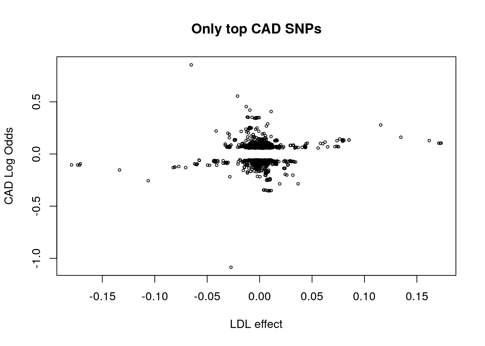
dat$ldl_qvalue <- p.adjust(dat$ldl_pvalue, method="BH")
with(dat[dat$ldl_qvalue < 0.1,], plot(ldl_effect, cad_log_odds, cex=0.5, main="Only top LDL SNPs", xlab="LDL effect", ylab="CAD Log Odds"))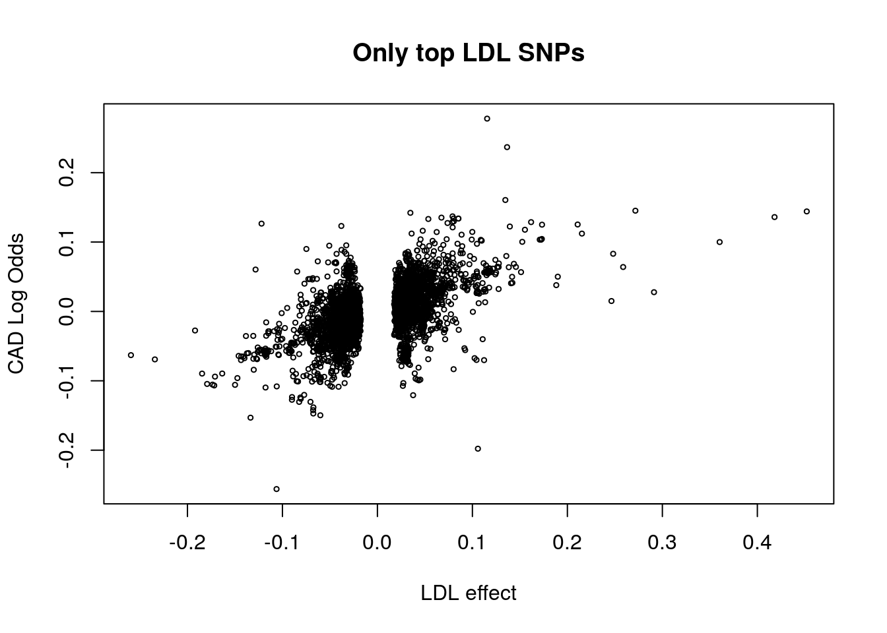
Visually, these traits appear to have patterns consistent with a causal effect of LDL on CAD and not constent with a causal effect of CAD on LDL. We see that among the top LDL SNPs, there is a strong correlation between LDL effect size and CAD effect size. However, reversing the procedure and selecting the top CAD SNPs, the trend is les spronounced. Some of the top CAD SNPs also have large LDL effect sizes, however there are many strong CAD SNPs that have LDL effect close to zero.
Within the set of top LDL SNPs, there is correlation between LDL effect and CAD effect even for SNPs that do not reach the significance threshold for CAD:
cat("Correlation of effect sizes among all top LDL SNPs: ", with(dat[dat$ldl_qvalue < 0.1,], cor(ldl_effect, cad_log_odds)), "\n")## Correlation of effect sizes among all top LDL SNPs: 0.5311864cat("Correlation for significant LDL SNPs that have weak CAD effect: ", with(dat[dat$ldl_qvalue < 0.1 & dat$cad_qvalue > 0.1,], cor(ldl_effect, cad_log_odds)), "\n")## Correlation for significant LDL SNPs that have weak CAD effect: 0.5276117cat("Correlation for significant LDL SNPs that have strong CAD effect: ", with(dat[dat$ldl_qvalue < 0.1 & dat$cad_qvalue < 0.1,], cor(ldl_effect, cad_log_odds)), "\n")## Correlation for significant LDL SNPs that have strong CAD effect: 0.6966864However, among top CAD SNPs, there is only (positive) correlation in effect sizes for SNPs that are also strong LDL SNPs
cat("Correlation of effect sizes among all top CAD SNPs: ", with(dat[dat$cad_qvalue < 0.1,], cor(ldl_effect, cad_log_odds)), "\n")## Correlation of effect sizes among all top CAD SNPs: 0.0788183cat("Correlation for significant CAD SNPs that have weak LDL effect: ", with(dat[dat$cad_qvalue < 0.1 & dat$ldl_qvalue > 0.1,], cor(ldl_effect, cad_log_odds)), "\n")## Correlation for significant CAD SNPs that have weak LDL effect: -0.216885cat("Correlation for significant CAD SNPs that have strong LDL effect: ", with(dat[dat$cad_qvalue < 0.1 & dat$ldl_qvalue < 0.1,], cor(ldl_effect, cad_log_odds)), "\n")## Correlation for significant CAD SNPs that have strong LDL effect: 0.6966864This suggests that the data are more consistant with a causal effect of LDL on CAD than vice versa.
As far as I know, there are no reports of a strong link between adult height and lipid levels. I am hoping that this can provide a negative example for us. Height data were downloaded from here.
LDL cholesterol:
ldl <- read_delim("../data/LDL_with_Effect.tbl", delim="\t")
dim(ldl)
#[1] 2692564 10
head(ldl)
# A tibble: 6 × 10
# MarkerName Allele1 Allele2 Weight GC.Zscore GC.Pvalue Overall Direction Effect StdErr
# <chr> <chr> <chr> <int> <dbl> <dbl> <chr> <chr> <dbl> <dbl>
#1 rs10 a c 81680 2.051 0.04027 + ++-+++++-+?++-??-++-??++- 0.0294 0.0152
#2 rs1000000 a g 95454 0.662 0.50770 + -----++-+--+-+++-+++-+-++ 0.0044 0.0063
#3 rs10000010 t c 95454 1.583 0.11350 + ++--++---+-+-++--+++---++ 0.0073 0.0052
#4 rs10000012 c g 95397 0.155 0.87700 + +-+-----++-++---+++---+-+ -0.0002 0.0076
#5 rs10000013 a c 95454 -1.392 0.16400 - --+---+--++--+--++---+-++ -0.0075 0.0062
#6 rs10000017 t c 95454 -0.015 0.98820 - --+---+++--+---+-++-++--+ 0.0021 0.0066Height
ht <- read_delim("../data/GIANT_HEIGHT_Wood_et_al_2014_publicrelease_HapMapCeuFreq.txt", delim="\t")
dim(ht)
[1] 2550858 8
head(ldl)
# A tibble: 6 × 8
# MarkerName Allele1 Allele2 Freq.Allele1.HapMapCEU b SE p N
# <chr> <chr> <chr> <dbl> <dbl> <dbl> <dbl> <int>
#1 rs4747841 A G 0.551 -0.0011 0.0029 7.0e-01 253213
#2 rs4749917 T C 0.436 0.0011 0.0029 7.0e-01 253213
#3 rs737656 A G 0.367 -0.0062 0.0030 4.2e-02 253116
#4 rs737657 A G 0.358 -0.0062 0.0030 4.1e-02 252156
#5 rs7086391 T C 0.120 -0.0087 0.0038 2.4e-02 248425
#6 rs878177 T C 0.300 0.0140 0.0031 8.2e-06 251271Merge data into a single data frame
sum(ht$MarkerName %in% ldl$MarkerName)
#[1] 2535734
ix <- which(ht$MarkerName %in% ldl$MarkerName)
dat <- data.frame(ht[ix, c("MarkerName", "Allele1", "Allele2", "b", "SE", "p")])
names(dat)[4:6] <- c("height_effect", "height_se", "height_pvalue")
dat$ldl_effect <- ldl$Effect[match(dat$MarkerName, ldl$MarkerName)]
dat$ldl_se <- ldl$StdErr[match(dat$MarkerName, ldl$MarkerName)]
dat$ldl_pvalue <- ldl$GC.Pvalue[match(dat$MarkerName, ldl$MarkerName)]
#Check Strands
letters <- c("a"="A", "c"="C", "g"="G", "t"="T")
ix_match <- which(letters[ldl$Allele1[match(dat$MarkerName, ldl$MarkerName)]] == dat$Allele1 &
letters[ldl$Allele2[match(dat$MarkerName, ldl$MarkerName)]] == dat$Allele2)
length(ix_match)
#[1] 2534065
ix_mismatch <- which(letters[ldl$Allele2[match(dat$MarkerName, ldl$MarkerName)]] == dat$Allele1 &
letters[ldl$Allele1[match(dat$MarkerName, ldl$MarkerName)]] == dat$Allele2)
length(ix_mismatch)
#[1] 0
ix_other <- which(!1:nrow(dat) %in% c(ix_match, ix_mismatch))
length(ix_other) #These seem to be mostly flipped strands
#[1] 1669
#dat$ldl_effect[ix_mismatch] <- -1*dat$ldl_effect[ix_mismatch]
dat <- dat[-ix_other,]
nrow(dat)
save(dat, file="../data/LDL_HEIGHT.RData")Some basic plots
library(readr)
library(sherlockAsh)
dat <- getobj("../data/LDL_HEIGHT.RData")
dat$height_qvalue <- p.adjust(dat$height_pvalue, method="BH")
with(dat[dat$height_qvalue < 0.1,], plot(ldl_effect, height_effect, cex=0.5, main="Only top Height SNPs", xlab="LDL effect", ylab="Height effect"))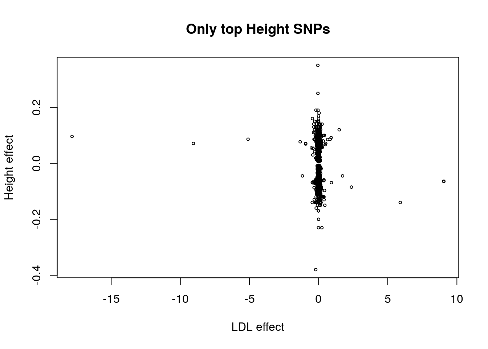
with(dat[dat$height_qvalue < 0.1,], plot(ldl_effect, height_effect, cex=0.5,
main="Only top Height SNPs", xlab="LDL effect", ylab="Height effect", xlim=c(-0.1, 0.1)))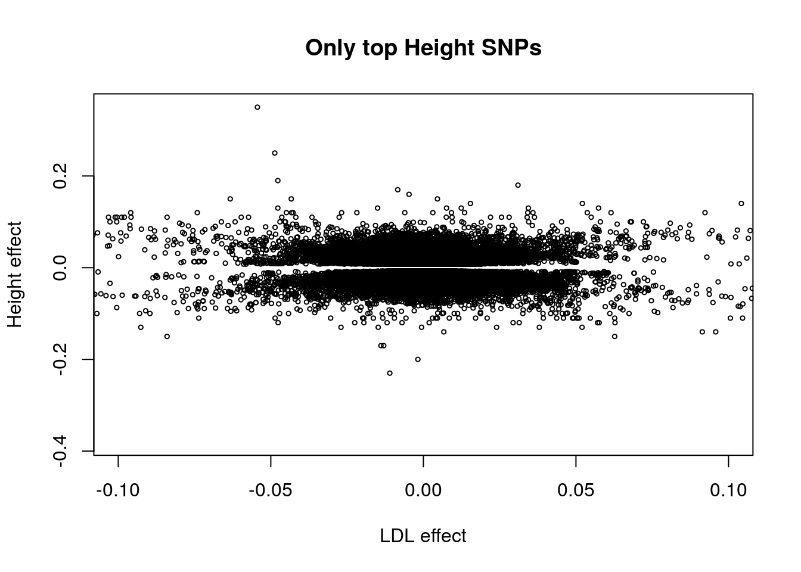
dat$ldl_qvalue <- p.adjust(dat$ldl_pvalue, method="BH")
with(dat[dat$ldl_qvalue < 0.1,], plot(ldl_effect, height_effect, cex=0.5, main="Only top LDL SNPs", xlab="LDL effect", ylab="Height effect"))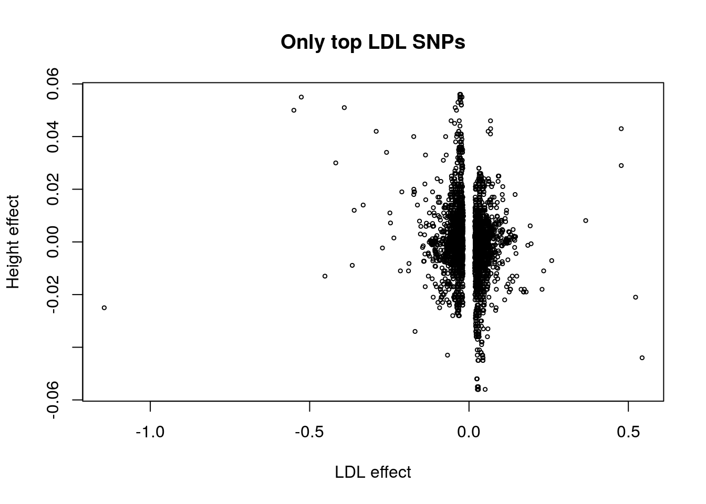
It seems possible that, among top LDL SNPs, there is some negative correlation in the LDL and height effect sizes.
We pruned SNPs for LD within windows defined by Pickerell et al and downloaded from (here.
| Test | LD Thresh | \(\hat{\lambda}\) | \(\hat{\lambda}/se(\hat{\lambda})\) | Corr (q-val <0.1) | Corr test |
|---|---|---|---|---|---|
| LDL->CAD | None (2.4m) | 0.52 | 76.9 | 0.53 | 50.2 |
| LDL->CAD | 0.5 (401k) | 0.54 | 28.6 | 0.59 | 20.0 |
| LDL->CAD* | 0.5 | 0.50 | 15.8 | ||
| LDL->CAD | 0.1 (145k) | 0.54 | 16.2 | 0.58 | 9.8 |
| ——— | ———– | —— | ——- | —— | —— |
| CAD->LDL | None | 0.09 | 45.0 | 0.08 | 2.93 |
| CAD->LDL | 0.5 | 0.09 | 14.8 | 0.08 | 0.73 |
| CAD->LDL* | 0.5 | 0.04 | 4.3 | ||
| CAD->LDL | 0.1 | 0.09 | 7.8 | -0.01 | -0.06 |
| ——— | ———– | —— | ——- | —— | —— |
| LDL->HT | None (2.5m) | -0.08 | -27.2 | -0.12 | -9.3 |
| LDL->HT | 0.5 (402k) | -0.04 | -7.4 | -0.19 | -5.2 |
| LDL->HT | 0.1 (145k) | -0.04 | -4.32 | -0.14 | -2.02 |
| ——— | ———– | —— | ——- | —— | —— |
| HT->LDL | None | -0.10 | -95.9 | -0.045 | -21.94 |
| HT->LDL | 0.5 | -0.09 | -27.9 | -0.05 | -7.9 |
| HT->LDL | 0.1 | -0.09 | -15.15 | -0.06 | -5.2 |
We saw in simulations that having a bad estimate of \(g_{2,1}\) can lead to inflated estimates of \(\lambda\) and increased rates of false positives. I tried two alternative methods of estimating \(g_{2,1}\).
These experiments are done using the set of SNPs pruned at a threshold of 0.1. Results are shown in the table below.
We observed that there is some sample overlap between the CAD and Height cohorts. Additionally, populations structure could lead to correlation between \(\hat{\beta}_1\) and \(\hat{\beta}_2\) conditional on the true effects \(\beta_1\) and \(\beta_2\). To account for this, I added an additional parameter \(\rho\) to account for this correlation. This extension of the model is described in the notes in Section 2.3. The correlation parameter \(\rho\) is also estimated via maximum likelihood. Fitting this model in the four analyses discussed previously (LDL-> CAD, CAD->LDL, LDL->HT, HT->LDL) in the SNP set pruned at an LD threshold of 0.1 gives the results in the table below.
| Test | \(g_{2,1}\) | \(\hat{\lambda}\)(CI) | \(\lambda\)-stat | \(\hat{\rho}\)(CI) | \(\rho\)-stat |
|---|---|---|---|---|---|
| LDL->CAD | \(g_{2,0}\) | 0.536(0.471, 0.600) | 16.24 | ||
| LDL->CAD | qval\(<0.2\) | 0.514(0.408, 0.619) | 9.55 | ||
| LDL->CAD | gwas | 0.527(0.456, 0.596) | 14.72 | ||
| LDL->CAD | \(g_{2,0}\) | 0.51(0.448, 0.578) | 15.55 | 0.024(0.018, 0.029) | 8.60 |
| LDL->CAD | qval\(<0.2\) | 0.480(0.372,0.589) | 8.69 | 0.025(0.020, 0.031) | 9.23 |
| LDL->CAD | gwas | 0.501(0.432, 0.570) | 14.14 | 0.024(0.019, 0.030) | 8.77 |
| LDL->CAD | qval-asc | 0.491(0.404, 0.577) | 11.12 | 0.025(0.019, 0.030) | 8.97 |
| ——— | ———- | ———————– | —— | ———————- | ——- |
| CAD->LDL | \(g_{2,0}\) | 0.089(0.067, 0.111) | 7.76 | ||
| CAD->LDL | qval\(<0.2\) | 0.049(0.005, 0.093) | 2.18 | ||
| CAD->LDL | gwas | 0.075(0.054, 0.097) | 6.97 | ||
| CAD->LDL | \(g_{2,0}\) | 0.004 (-0.021, 0.030) | 0.33 | 0.027(0.020, 0.034) | 7.58 |
| CAD->LDL | qval\(<0.2\) | 0.018(-0.029, 0.064) | 0.78 | 0.028(0.022, 0.034) | 8.82 |
| CAD->LDL | gwas | 0.006(-0.019, 0.031) | 0.51 | 0.026(0.019, 0.033) | 7.62 |
| CAD->LDL | qval-asc | 0.004(-0.021, 0.029) | 0.33 | 0.027(0.019, 0.034) | 7.58 |
| ——— | ———- | ———————– | —— | ———————- | ——- |
| LDL->HT | \(g_{2,0}\) | -0.041(-0.059, -0.022) | -4.32 | ||
| LDL->HT | qval\(<0.2\) | -0.07(-0.113, -0.035) | -3.73 | ||
| LDL->HT | gwas | -0.044(-0.066, -0.022) | -3.85 | ||
| LDL->HT | \(g_{2,0}\) | -0.028(-0.046, -0.009) | -2.94 | -0.049(-0.056, -0.043) | -14.76 |
| LDL->HT | qval\(<0.2\) | -0.057(-0.096, -0.018) | -2.89 | -0.049(-0.056, -0.042) | -14.65 |
| LDL->HT | gwas | -0.027 (-0.049,-0.006) | -2.46 | -0.049(-0.056, -0.043) | -14.73 |
| LDL->HT | qval-asc | -0.030(-0.054, -0.005) | -2.32 | -0.049(-0.056, -0.043) | -14.81 |
| ——— | ———- | ———————– | —— | ———————- | ——- |
| HT->LDL | \(g_{2,0}\) | -0.092(-0.104, -0.080) | -15.15 | ||
| HT->LDL | qval\(<0.2\) | -0.079(-0.103, -0.055) | -6.49 | ||
| HT->LDL | gwas | -0.086(-0.098, -0.073) | -13.68 | ||
| HT->LDL | \(g_{2,0}\) | -0.057(-0.072, -0.042) | -7.50 | -0.032(-0.040, -0.023) | -7.60 |
| HT->LDL | qval\(<0.2\) | 0.047 (-0.071, 0.022) | -3.73 | -0.064(-0.076, -0.053) | -10.78 |
| HT->LDL | gwas | -0.050(-0.065, -0.035) | -6.51 | -0.036(-0.044, -0.028) | -8.48 |
| HT->LDL | qval-asc | -0.058(-0.073, -0.043) | -7.60 | -0.031(-0.040, -0.023) | -7.57 |
Since there was very little difference between estiates with \(g_{2,1} = g_{2,0}\) and \(g_{2,1}\) estimated using the qval-asc method, these permutations are run using \(g_{2,1} = g_{2,0}\). In each repetition, I permuted the effects and standard errors (together) for either height or CAD. I then re-ran Sherlock v4 to obtain an estimate of \(\lambda\) and \(\rho\). Since this permutation scheme breaks the relationship between the two studies, we expect that \(E[\lambda_{perm}] = 0\) and \(E[\rho_{perm}] = 0\).
Encouragingly - on permuted data, the statistics are approximately normally distributed.
library(stats4)
perm <- readRDS("../results/ht_ldl_v4.perm.RData")
r <- readRDS("../results/ht_ldl.v4.RData")
hist(perm$lambda_stat, breaks=30,
main="Height->LDL permutation stats\n500 permutations", xlab="Statistic",
xlim=range(c(perm$lambda_stat), coef(r)[1]/sqrt(vcov(r)[1,1])),
probability=TRUE)
abline(v=coef(r)[1]/sqrt(vcov(r)[1,1]), col="red")
curve(dnorm(x), add=TRUE)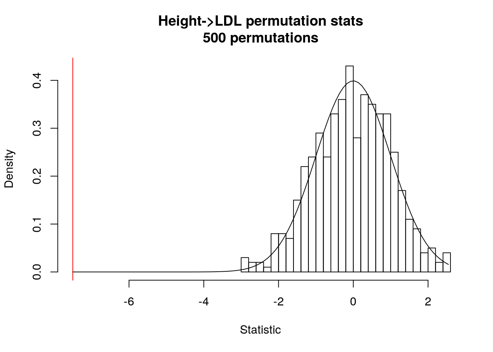
e <- qnorm(p=seq(0, 1, length.out=502)[2:501])
plot(sort(perm$lambda_stat), e, xlab="Observed", ylab="Expected")
abline(0, 1)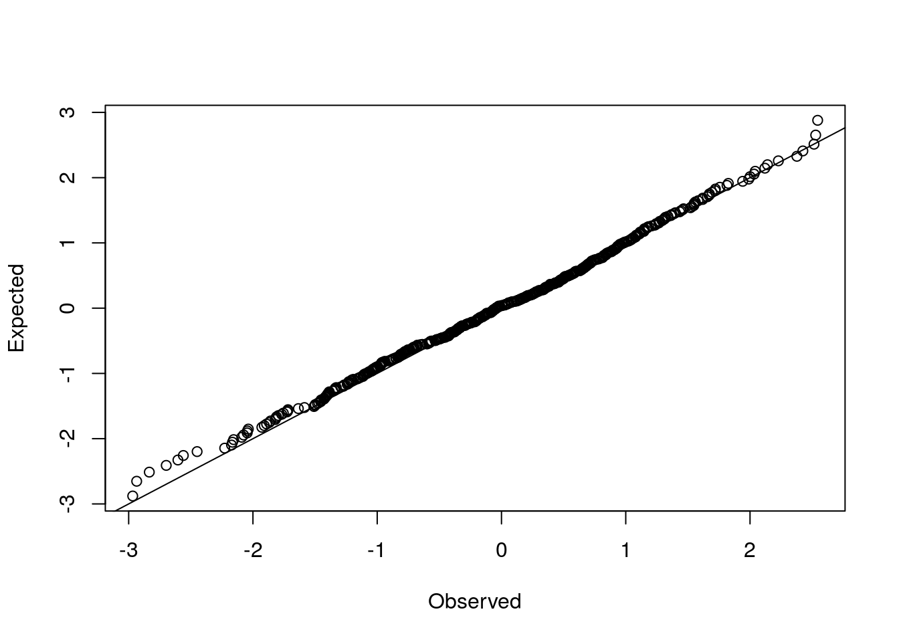
library(stats4)
perm <- readRDS("../results/ldl_ht_v4.perm.RData")
r <- readRDS("../results/ldl_ht.v4.RData")
st <- coef(r)[1]/sqrt(vcov(r)[1,1])
hist(perm$lambda_stat, breaks=30,
main="LDL->HT permutation stats\n500 permutations", xlab="Statistic",
xlim=range(c(perm$lambda_stat), st),
probability=TRUE)
abline(v=st, col="red")
curve(dnorm(x), add=TRUE)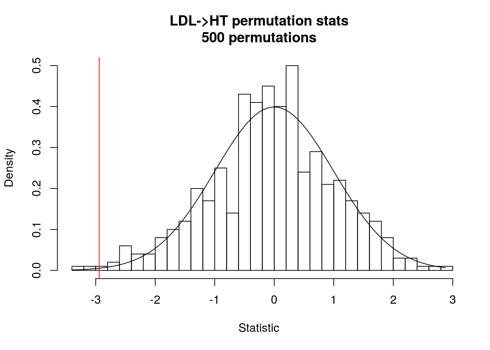
e <- qnorm(p=seq(0, 1, length.out=502)[2:501])
plot(sort(perm$lambda_stat), e, xlab="Observed", ylab="Expected")
abline(0, 1)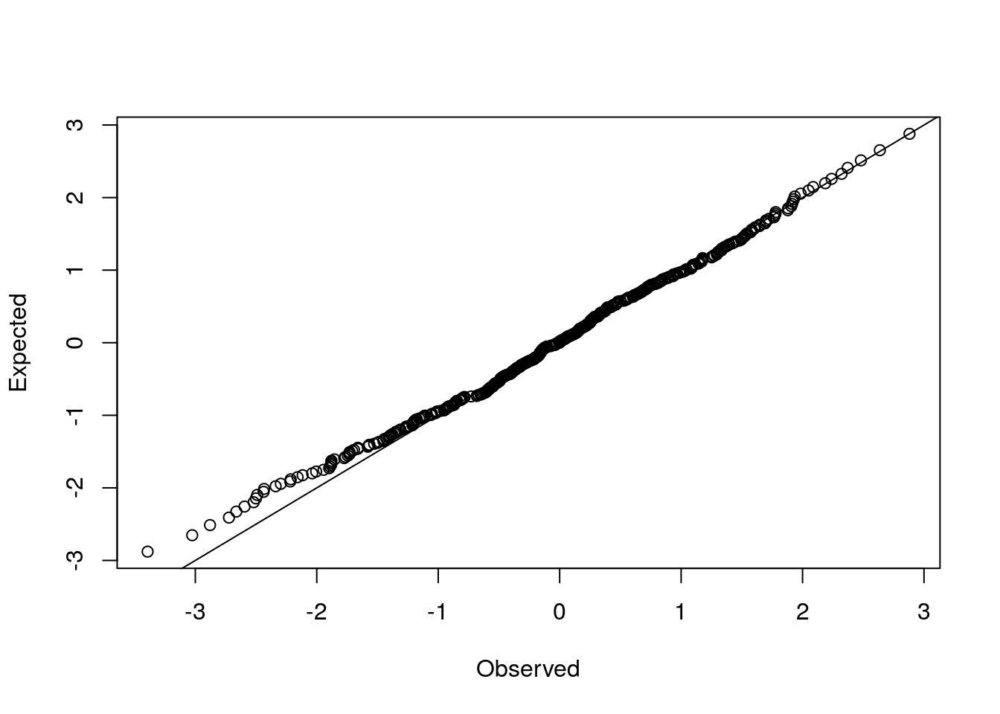
library(stats4)
perm <- readRDS("../results/ldl_cad_v4.perm.RData")
r <- readRDS("../results/ldl_cad.v4.RData")
st <- coef(r)[1]/sqrt(vcov(r)[1,1])
hist(perm$lambda_stat, breaks=30,
main="LDL->CAD permutation stats\n500 permutations", xlab="Statistic",
xlim=range(c(perm$lambda_stat), st),
probability=TRUE)
abline(v=st, col="red")
curve(dnorm(x), add=TRUE)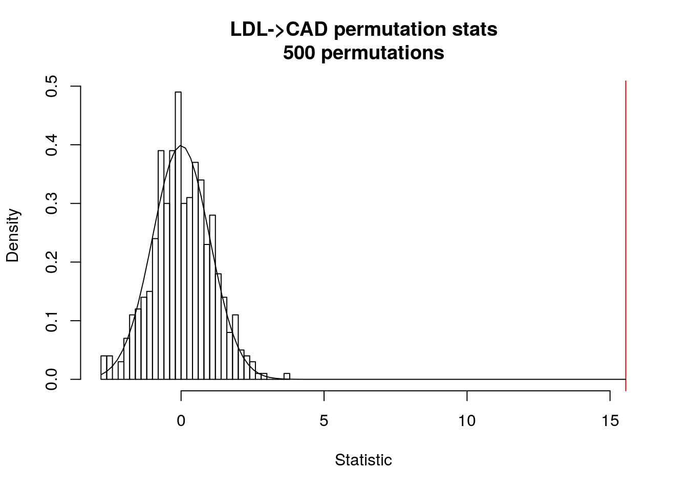
e <- qnorm(p=seq(0, 1, length.out=502)[2:501])
plot(sort(perm$lambda_stat), e, xlab="Observed", ylab="Expected")
abline(0, 1)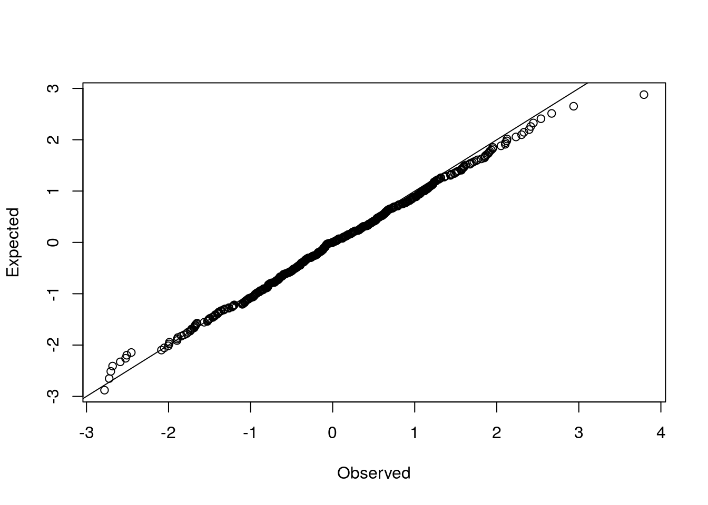
library(stats4)
perm <- readRDS("../results/cad_ldl_v4.perm.RData")
r <- readRDS("../results/cad_ldl.v4.RData")
st <- coef(r)[1]/sqrt(vcov(r)[1,1])
hist(perm$lambda_stat, breaks=30,
main="CAD->LDL permutation stats\n500 permutations", xlab="Statistic",
xlim=range(c(perm$lambda_stat), st),
probability=TRUE)
abline(v=st, col="red")
curve(dnorm(x), add=TRUE)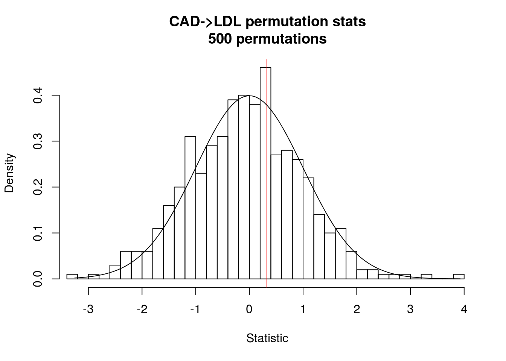
e <- qnorm(p=seq(0, 1, length.out=502)[2:501])
plot(sort(perm$lambda_stat), e, xlab="Observed", ylab="Expected")
abline(0, 1)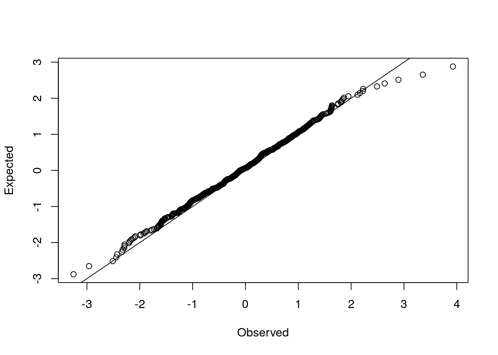
This R Markdown site was created with workflowr